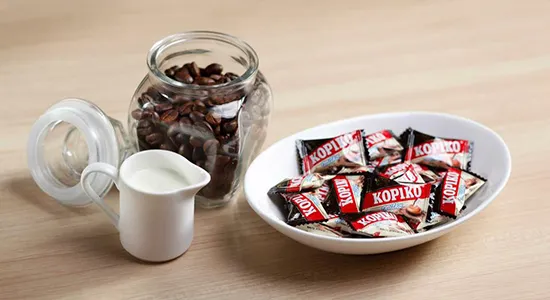
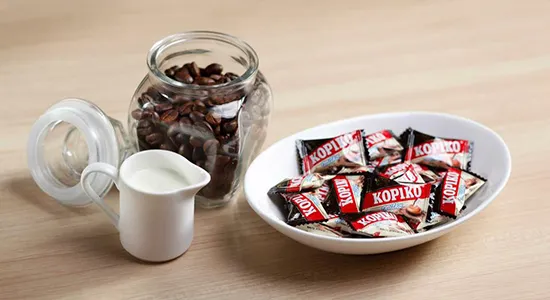

Kopiko Coffee Candy is the World’s #1 selling coffee candy, made from the finest coffee beans, specially blended to give you enjoyment of
real coffee without having to brew. It’s like having a cup of coffee wherever you go.
Our bite sized, individually wrapped candies are available in regular Coffee and Cappuccino flavors. We have many packaging options for you